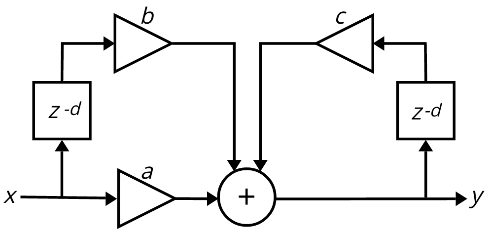

The general filter equation
FIR and IIR filters
A finite impulse response filter (FIR) outputs a weighted combination of the current input sample and one or more past input samples.
The general equation for an FIR filter is:
yn = a0xn + a1xn-1 + a2xn-2 + ... aNxn-N
where each coefficient—a0, a1, etc. —can have any value, including 0 (usually between -1 and 1), determining the relative weighting of the delayed samples in the output.
A filter equation also can contain past output samples, which would be referred to as yn-1, yn-2, etc. Thus, a general filter equation—where the output can consist of the current input sample, past input samples, and past output samples—is:
yn = a0xn + a1xn-1 + a2xn-2 + ... aNxn-N - b1yn-1 - b2yn-2 - ... bNyn-N
Because the equation uses past output samples, the output of the filter is effectively being fed back into its input. For this reason, a filter equation that uses past output samples is often called a feedback filter or a recursive filter. (And by contrast, an FIR filter, which uses past input samples but no past output samples, may be called a feedforward filter or a non-recursive filter.) Any filter that has nonzero coefficients for any of its past output samples is an infinite impulse response (IIR) filter, because theoretically its output will never totally reach 0. An IIR filter is sometimes also referred to as a resonant filter, because the feedback of past outputs tends to reinforce (resonate) particular frequencies.
Examples of IIR filters
Let's take a look at a couple of IIR filters that are commonly used for audio applications, and that exist as MSP objects in Max. (Note: By convention in most DSP textbooks, in an IIR filter the coefficients for past inputs use the letter b and the coefficients for the past outputs use the letter a. However, just for consistency with the way the coefficients are labeled in the Max documentaton, within this page we'll continue to use a for the past input coefficients and b for the past output coefficients.)
Biquad Filter
The biquad~ object in Max implements a second-order recursive filter, using the two most recent past input samples and the two most recent past output samples. So its difference equation is:
yn = a0xn + a1xn-1 + a2xn-2 - b1yn-1 - b2yn-2
Diagrammatically, it can be depicted like this:
Biquad, 2nd-order IIR filter
A particularly valuable feature of the biquad filter is that, depending on the coefficients, it can be made to behave like a wide variety of filter types—lowpass, highpass, bandpass, etc.— (as demonstrated in the video on Audio Filter Types), and those coefficients can be provided by the helpful filtergraph~ UI object.
filtergraph~ provides coefficients for biquad~ filter equation
Comb Filter
A comb filter emphasizes or de-emphasizes a harmonically-related series of frequencies. It does this by using a past input sample and/or past output sample from a specfic moment in the past. The delay time of the past samples will determine which frequencies are enhanced by the filter and which are attenuated. For example, if the signal is delayed exactly 1 millisecond (1/1000 of a second), that means the delayed version of the signal will be exactly in phase for frequencies that are a multiple of 1000 Hz, and will be exactly a half cycle out of phase for the frequencies exactly between those, such as 500 Hz, 1500 Hz, 2500 Hz, and so on. Thus, every frequency is affected differently by the filter, and the resulting magnitude response curve looks like the teeth of a comb. The magnitude response of the comb filter looks like this (with multiples of 2π representing the frequencies that are exactly in phase with the delayed signal):

Feedforward comb filter effect
And if we use the past output sample, the resonating effect is even more pronounced:
Feedback comb filter effect
We could have a filter with both a feedforward delay and a feedback delay. The difference equation for a comb filter that has both feedforward and feedback components is:
yn = a(xn) + b(xn-d) - c()yn-d)
where a is the coefficient for the current input sample, b is the coefficient for the delayed input sample, c is the coefficient for the delayed output sample, and d is the number of samples of delay that will result in emphasizing the desired frequencies.
The filter diagram would look like this:

Comb filter diagram
If, for example, we wanted to emphasize all the harmonics of low A (A2 at 110 Hz) in a sound, we would use a delay time of 1/110 second, which is 9.091 ms. At a sampling rate of 44,100, the required delay would be 400.91 samples. We could round that to 401 samples of delay, getting emphasis at harmonics of 109.975 Hz, or with a little more math we could use interpolation to find the value that's 0.91 of the way between 400 samples ago and 401 samples ago.
Because a comb filter with a fixed delay time like that will impose the same emphasis at every harmonic of its input signal, the output will have a pitched buzzy timbre, exactly as if the input had been convolved with a pulse train at the fundamental frequency. It sounds like this.
Voice, with comb filtering delay of 1/110 second
If the delay time is continually changing—modulated by an LFO, for example—the emphasized frequencies will always be changing, giving a sweeping flanging effect. It sounds like this.
LFO-modulated delay of a comb filter
In Max, the comb~ object implements the comb filtering equation shown above. The user specifies a buffer size (50 ms is largely sufficient) a delay time in ms, and values for the a, b, and c coefficients.
comb~ object in Max
Conclusion
As you can see, the general filter equation can result in a wide variety of different filter effects, depending on the number of feedforward and feedback delays, and the values of the coefficients. In Max, there are many available filter objects: lores~, reson~, onepole~, cross~, fffb~, svf~, comb~, and biquad~. Because of its helper object filtergraph~, biquad~ is probably the most versatile and most commonly used filter in Max.
Vocabulary
- FIR
- IIR
- feedforward
- feedback
- recursive
- non-recursive
- biquad filter
- comb filter
- order
Additional Resources
- Introduction to Digital Filters with Audio Applications by Julius O. Smith
This page is by Christopher Dobrian, dobrian@uci.edu, May 25, 2019.